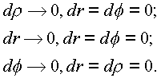
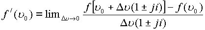

|
В. И. ЕЛИСЕЕВ ВВЕДЕНИЕ В МЕТОДЫ ТЕОРИИ
ФУНКЦИЙ ПРОСТРАНСТВЕННОГО КОМПЛЕКСНОГО ПЕРЕМЕННОГО |
|
1.2.1. Дифференцируемость функций
Задать функцию в пространстве
(Y) означает задать закон, по которому каждой точке n из рассматриваемой области G пространства (Y) ставится в соответствие точка w из пространства (Y).Функция
w =f(n ),
где
Следовательно, задание функции w равносильно заданию от четырех действительных переменных:
Определение предела и непрерывности функций полностью совпадает с теми, которые даются в плоском случае [7
].Естественно пространственную комплексную функцию рассматривать как функцию от двух комплексных переменных (
z). Так что, еслито функцию целесообразно записать в виде
где соответственно будут выполняться соотношения
:В комплексном пространстве предел функции
f(n ) при существует, еслии, следовательно,
Остается в силе главное условие комплексного анализа (
z) о независимости предела от способа приближения точки . Если предел существует, то при любом способе приближенияНа все эти определения не оказывает влияние особенность комплексного пространства, обусловленная наличием конуса-фильтра дискретных точек делителей нуля.
Функция
f(n ), определенная в некоторой точке окрестности точки n , дифференцируема в этой точке, если существует предел(1.21.) |
Этот предел является производной функции, определенной в пространстве
(n ).Условия дифференцируемости функции
f(n ) в терминах комплексных функций W и T будут давать:ТЕОРЕМА 1. Пусть функция
f(n )=W(z, s )+jT(z, s ) определена в точке n и некоторой окрестности ее, причем в этой точке функции Т, W дифференцируемы в смысле комплексного переменного (z) и их частные производные непрерывнытогда для дифференцируемости функции в точке
n необходимо и достаточно, чтобы в этой точке имели место равенства:| (1.22.) |
Эти условия являются аналогом условий Коши - Римана.
Проведем доказательство условий (1
.22.). Пусть существует производнаяВоспользуемся независимостью предела от способа стремления
h к нулю.А
. Пусть точка n +h стремится к точке n по комплексной оси z=z+iy. Тогда получимБ. Найдем тот же предел в предложении, что точка n
+h стремится к n по комплексной оси js , то есть что t® 0 и h=j, где i=x +ih . Получим
Таким образом, имеем выражение для производной в двух видах
Комплексы в пространстве равны когда равны попарно составляющие их комплексы. Откуда и вытекают соотношения (
1.22.).Теорема может быть написана и в действительных переменных
x, y, x ,h . Однако этот вариант наиболее прост в изложении и более интересен вариант, когда комплексы представимы в цилиндрических трехмерных а). и четырехмерных координатах. Напомним эти выражения:а)
б)
Произведем вывод необходимых условий в координатах а).
Функция
f(n ) записывается в видеПриращение переменной, n при переходе к точке
n +h выразим как дифференциал вектора nРаскроем предел (1.21.) для трех специальных случаев стремления
h® 0:
Первый случай соответствует пути по радиусу r при постоянном угле f к постоянной аппликате по оси
is ; второй - пути по образующей цилиндрической оси is ; третий - пространственной кривой, на которой изменяется только угол f .Для первого случая f
=const, r = const, имеем(1.23.) |
Для второго случая, r
=const, f =const, имеем
(1.24.) |
Для третьего случая, r
= const, r = const, имеем| (1.25.) |
Выражения (
1.23.), (1.24.), (1.25.) дают значения производной от пространственной комплексной функции f(n ) в цилиндрических координатах и необходимые условия ее существования
(1.26.) |
Приравнивая действительные и комплексные части, получим необходимые условия дифференцирования функции:
(1.27.) |
Если функция
f определена в четырехмерном пространстве, то необходимые условия ее дифференцирования записываются в виде:(1.28.) |
Производная

(1.29.) |
Методика вывода выражений (1.28.), (1.29.) аналогична предыдущей.
Условия (1.22.), (1.27.), (1.28.) являются необходимыми условиями существования производной от функции, определенной в комплексном пространстве. Достаточные условия доказываются как и в обычной (z) плоскости (как в двумерном случае).
Замечание. Предел, определяющий наличие производной, необходимо оценить в критических особых точках пространства - в элементах делителей нуля.
Если точка
n +h стремится к точке n по изолированному направлениюто
(1.30.) |
Из выражения (
1.30.) видно, что для стремления точки n +h к точке h по изолированному направлению предел не может существовать, так как его составление теряет смысл, как и в двумерном случае при попытке составить предел, взяв сразу D z=0. Это - результат свойств делителей нуля, модуль которых равен корню из нуляВ обычной комплексной плоскости
(z) при рассмотрении предела естественно выбрасывается D z=0. В пространстве вычет приращения h=0 влечет за собой и вычет элементов делителей нуляОднако в пространстве (Y) более правильным будет производная по изолированному направлению.
Каждая точка
,  .
.
Для определения производной от функции
, или .
Последнее соотношение означает, что для любого
существует такое, что неравенство имеет место, еслиВ этом случае
, где есть величина более высокого порядка малости, чем . Справедливо и обратное утверждение, где A- есть комплексная постоянная, не
зависящая от . В этом случае функция  дифференцируема в точке
дифференцируема в точке  и
и
Мини оглавление:
[0], [1.1.1, 1.1.2, 1.1.3, 1.1.4, 1.1.5, 1.1.6, 1.1.7, 1.1.8, 1.2, 1.2.1, 1.2.2, 1.2.2.a, 1.2.2.b, 1.2.2.c, 1.2.2.d, 1.2.2.e, 1.2.2.f, 1.2.2.g, 1.2.2.h, 1.2.3, 1.3.1, 1.3.2, 1.3.3, 1.3.4, 1.3.5, 1.3.6, 1.4.1, 1.4.2, 1.5, 1.6, 1.7.1, 1.7.2, 1.7.3.1, 1.7.3.2, 1.7.3.3, 1.7.4.1, 1.7.4.2, 1.8.1], [2.1, 2.2],[3.1, 3.2, 3.3, 3.4.1, 3.4.2, 3.4.3, 3.4.4, 3.4.5],[4.1, 4.2, 4.3, 4.4],[5.1, 5.1.Рис.52, 5.2, 5.3, 5.4, 5.4.Т1, 5.4.Т2, 5.4.Т3, 5.5.1, 5.5.2, 5.5.3, 5.5.4],[6.1.1, 6.1.2, 6.2.1, 6.2.2, 6.2.3, 6.2.4, 6.2.5, 6.3, 6.4.1, 6.4.2, 6.5.1, 6.5.2],[7.1, 7.2, 7.3, 7.4, 7.5, 7.6, 7.7.1, 7.7.2, 7.8.1, 7.8.2, 7.8.3, 7.9],[8.1, 8.2.1, 8.2.2, 8.3, 8.4, 8.5, 8.6, 8.6.T1, 8.7, 8.8.1, 8.8.2, 8.8.3, 8.9.1, 8.9.2, 8.9.3, 8.10, 8.10.T2, 8.10.T3],[9.1, 9.2, 9.3, Рис.88, 89, 90, 91, 92, 93, 94, 95, 96, 97, 98, 99, 100],[10.1, 10.2, 10.3, 10.4, 10.5, 10.6, 10.7, 10.8, 10.9, 10.10, 10.11, 10.12, 10.13, 10.14, 10.15.1, 10.15.2, 10.16.1, 10.16.2, 10.17, 10.18],[11]
Размещенный материал является электронной версией книги: © В.И.Елисеев, "Введение в методы теории функций пространственного комплексного переменного", изданной Центром научно-технического творчества молодежи Алгоритм. - М.:, НИАТ. - 1990. Шифр Д7-90/83308. в каталоге Государственной публичной научно-технической библиотеки. Сайт действует с 10 августа 1998.
E-mail: mathsru@gmail.com